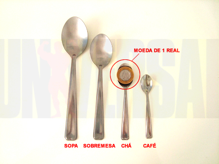

Como tomar creatina, dosagem? quantas ml de água?
Antes de proseguir você com certeza ja ouviu sobre vários tipos de creatina existentes no mercado, prometendo resultados acima da tradicional creatina monohidratada. Porém não existem estudos que comprovam sua efetividade, a melhor creatina com certeza é a creatina monohidratada encontrada basicamente em qualquer loja de suplementos e com preço acessivel, bem inferior aos tipos mais "arrojados" da creatina.
Dosagem e como hora de consumir
O modo de consumo ideal e a dosagem que a maioria dos fabricantes indicam é 5g, misturada com água, a quantidade de ml de água varia entre 600 a 800ml. Normalmente nos potes de creatina vem uma colher dosadora para medir os 5g.
Caso não possua a colher dosadora você poderá utilizar a colher abaixo

Foto:http://universalnutrition.com.br
Colher de chá= 5gramas/ colher de café=3gramas
É de extrema importância consumir muita água ao longo do dia, o indicado é 2 litros de água.
Normalmente quem utiliza suplementos os consome de 3 formas, que seria Qualquer horário do dia ou manhã, Antes do treino, Depois do treino.
Porém muitos preferem o pós treino, utilizando o pico de insulina gerado no final do treino. Outra parte prefere tomar creatina ao longo do dia ou no período da manhã alegando que assim que o corpo acorda necessita de nutrientes e a creatina seria bem vinda, assim estocando durante o dia.
Nada melhor que você mesmo estude seu corpo para definir o melhor horário para tomar a creatina.